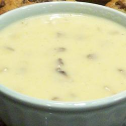

Soep met mosterd, prei en kaas

Een prachtige, romige prei soep met een stevige kaas- en mosterdkick. Voor een heerlijke lunch, kun je het serveren met kaas-en-uienbrood of walnotenbrood.
ingrediënten
680 gr prei, gewassen en gesneden
1 grote ui, fijngehakt
1 middelgrote aardappel, in kleine blokjes
1 grote wortel, in kleine blokjes
1 klontje boter
1 eetlepel olijfolie
1 theelepel suiker (optioneel)
1 volle theelepel mosterd(poeder)
twee theelepels maïzena
1 groentebouillon blokje
30 gr Gruyère kaas, geraspt
60 gr rijpe Cheddar, geraspt
225 ml slagroom
1,2 liter water, of zoveel als nodig
Zout en peper naar smaak
Bereidingswijze
Bak in een grote pan met boter en olijfolie, op middelhoog vuur, de prei, ui, aardappel en wortel in 10 minuten of net zolang tot de groenten zacht zijn.
Meng de mosterd(poeder) en maïzena met 100 ml water tot een dun papje. Zet apart.
Bestrooi de groenten met zout en peper. Roer het mosterd-water mengsel en het resterende water door de groenten.
Breng dit mengsel aan de kook. Roer het bouillonblokje erdoor, zet het vuur lager en laat ongeveer een uur zachtjes koken, tot het vocht tot de helft gereduceerd is.
Pureer de soep met een staafmixer of keukenmachine tot het schuimig is, maar niet te glad.
Breng de pan met de soep weer aan de kook. Roer de slagroom, gruyère en cheddar erdoor. Verhit de soep, zodat de kazen smelten, maar laat het niet koken. Serveer warm.
Klik HIER om terug te gaan naar de hoofdpagina.